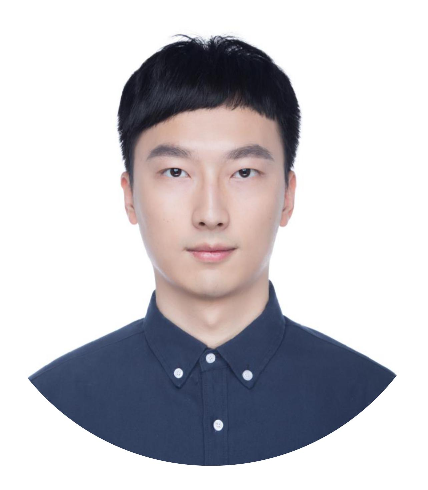

Bo Miao
I am a fourth-year Ph.D. student at CS, the University of Western Australia, advised by Prof. Ajmal Mian and Prof. Mohammed Bennamoun. Prior to joining UWA, I was a research assistant at The Chinese University of Hong Kong, Shenzhen. I obtained both my masters and bachelors at EE, University of Jinan.
Email | GoogleScholar | GitHub
Activities
- Conference Reviewer: NeurIPS, ICLR, CVPR, ICCV, ECCV, AAAI, IROS, DICTA, etc.
- Session chair of IROS 2021, "Recognition"
- 3rd place in the Referring VOS Track at the 5th Large-scale VOS Challenge (without using model ensembles)
Publications
My research interest mainly falls on Computer Vision (e.g. video segmentation), Vision-and-Language, and Human-Computer Interaction.
Conference Papers:
- Referring Human Pose and Mask Estimation in the Wild
Bo Miao, Mingtao Feng, Zijie Wu, Mohammed Bennamoun, Yongsheng Gao, Ajmal Mian
Advances in Neural Information Processing Systems (NeurIPS) 2024 | paper | code
- External Knowledge Enhanced 3D Scene Generation from Sketch
Zijie Wu, Mingtao Feng, Yaonan Wang, He Xie, Weisheng Dong, Bo Miao, Ajmal Mian
European Conference on Computer Vision (ECCV) 2024 | paper
- Spectrum-guided Multi-granularity Referring Video Object Segmentation
Bo Miao, Mohammed Bennamoun, Yongsheng Gao, Ajmal Mian
International Conference on Computer Vision (ICCV) 2023 | paper | code
- Regional Video Object Segmentation by Efficient Motion-Aware Mask Propagation
Bo Miao, Mohammed Bennamoun, Yongsheng Gao, Ajmal Mian
International Conference on Digital Image Computing: Techniques and Applications (DICTA) 2022 | paper
- Self-Supervised Video Object Segmentation by Motion-Aware Mask Propagation
Bo Miao, Mohammed Bennamoun, Yongsheng Gao, Ajmal Mian
IEEE International Conference on Multimedia and Expo (ICME) 2022 | Oral | paper | code
- Object-to-Scene: Learning to Transfer Object Knowledge to Indoor Scene Recognition
Bo Miao, Liguang Zhou, Ajmal Mian, Tin Lun Lam, Yangsheng Xu
IEEE/RSJ International Conference on Intelligent Robots and Systems (IROS) 2021 | paper | code
- Automated Epileptic Seizure Detection Method Based on the Multi-attribute EEG Feature Pool and mRMR Feature Selection Method
Bo Miao, Junling Guan, Liangliang Zhang, Qingfang Meng, Yulin Zhang
International Conference on Computational Science (ICCS) 2019 | paper
- Fractional Amplitude of Low-frequency Fluctuation and Degree Centrality in Autistic Children: A Resting-state fMRI Study
Bo Miao, Junling Guan, Qingfang Meng, Yulin Zhang
International Workshop on Pattern Recognition 2018 | paper
- A Feature Selection Method for Classification of ADHD
Bo Miao, Yulin Zhang
International Conference on Information, Cybernetics and Computational Social Systems 2017 | paper | Best Paper
Journal Papers:
- Context-Enhanced Video Moment Retrieval with Large Language Models
Weijia Liu, Bo Miao, Jiuxin Cao, Xuelin Zhu, Bo Liu, Mehwish Nasim, Ajmal Mian
arXiv preprint arXiv:2405.12540 2024 | paper
- Temporally Consistent Referring Video Object Segmentation with Hybrid Memory
Bo Miao, Mohammed Bennamoun, Yongsheng Gao, Mubarak Shah, Ajmal Mian
IEEE Transactions on Circuits and Systems for Video Technology (TCSVT) 2024 | paper | code
- Region Aware Video Object Segmentation with Deep Motion Modeling
Bo Miao, Mohammed Bennamoun, Yongsheng Gao, Ajmal Mian
IEEE Transactions on Image Processing (TIP) 2024 | paper
- Classification of ADHD Individuals and Neurotypicals Using Reliable RELIEF: A Resting-State Study
Bo Miao, Liangliang Zhang, Junling Guan, Qingfang Meng, Yulin Zhang
IEEE Access 2019 | paper